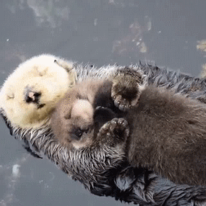

Otter, (subfamily Lutrinae), any of 13 species of semiaquatic mammals that belong to the weasel family (Mustelidae)
and are noted for their playful behaviour. The otter has a lithe and slender body with short legs, a strong neck, and
a long flattened tail that helps propel the animal gracefully through water. Swimming ability is further enhanced in most
species by four webbed feet. Two species are marine, and the others living predominantly in fresh water. Otters range in
size from 3 kg (6.6 pounds) in the Asian small-clawed otter (Aonyx cinereus, formerly Amblonyx cinereus) to 26 kg (57 pounds)
in the giant otter (Pteronura brasiliensis) and 45 kg (99 pounds) in the sea otter (Enhydra lutris). Fur colour is various shades
of brown with lighter underparts.